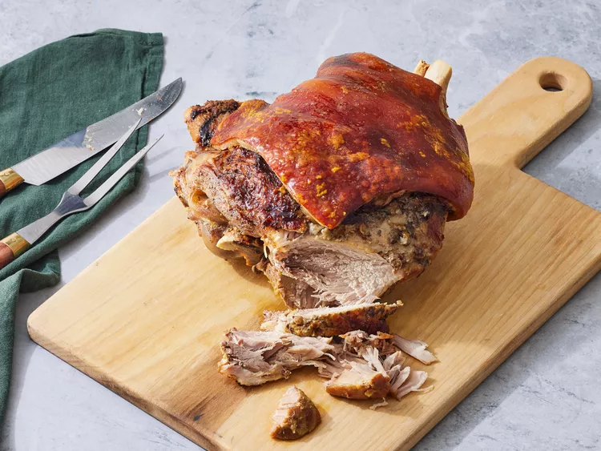

Pernil (Slow-Roasted Pork)
Pernil is a popular Puerto Rican dish made by roasting a seasoned pork shoulder until it's tender and delicious. This recipe is loved by everyone in our family.

Ingredients
- 9 pounds skin-on, bone-in pork shoulder (picnic) roast
- 1 medium lime, halved
- 10 cloves garlic
- 2 ½ tablespoons salt
- 1 ½ tablespoons olive oil, divided
- 1 tablespoon dried oregano
- 1 ½ teaspoons ground black pepper
- 1 ¼ teaspoons adobo seasoning (such as Goya®)
- 1 teaspoon vinegar
- ¼ teaspoon sazon seasoning
- 2 (12 fluid ounce) cans or bottles beer (such as Budweiser®)
Directions
- Gather all ingredients. Preheat the oven to 325 degrees F (165 degrees C).
- Rub pork shoulder all over with lime.
- Mash garlic into a paste with a mortar and pestle, then transfer to a bowl.
- Mix in salt, 1 tablespoon oil, oregano, pepper, adobo seasoning, and vinegar until well combined
- Pull the skin back to within 1 inch from the narrow part of the bone.
- Make 3/4-inch slits all over the pork with a sharp knife.
- Stuff seasoned garlic paste into the slits, then pull the skin back into place.
- Mix remaining 1/2 tablespoon oil with sazón seasoning in a small bowl.
- Rub all over the skin.
- Transfer pork to a large roasting pan. Pour beer into the pan, then cover with aluminum foil, sealing well.
- Roast in the preheated oven until pork is slightly pink in the center, about 3 hours. Increase the oven temperature to 350 degrees F (175 degrees C).
- Uncover and continue roasting until the skin is golden brown and crispy, about 2 1/2 hours. An instant-read thermometer inserted into the center should read at least 145 degrees F (63 degrees C). Remove from the oven and let stand for 10 minutes before carving.
Home